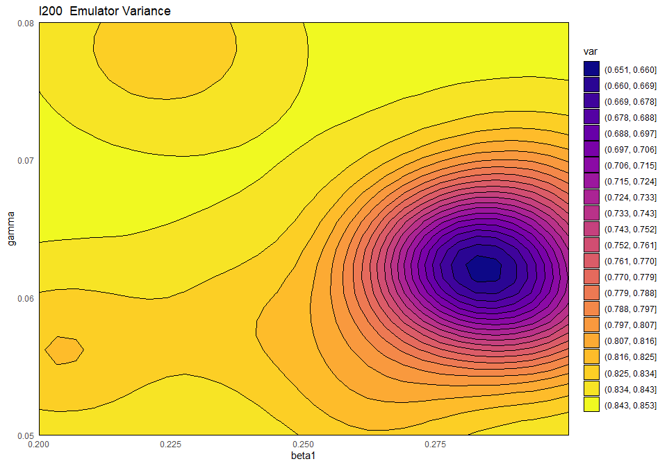
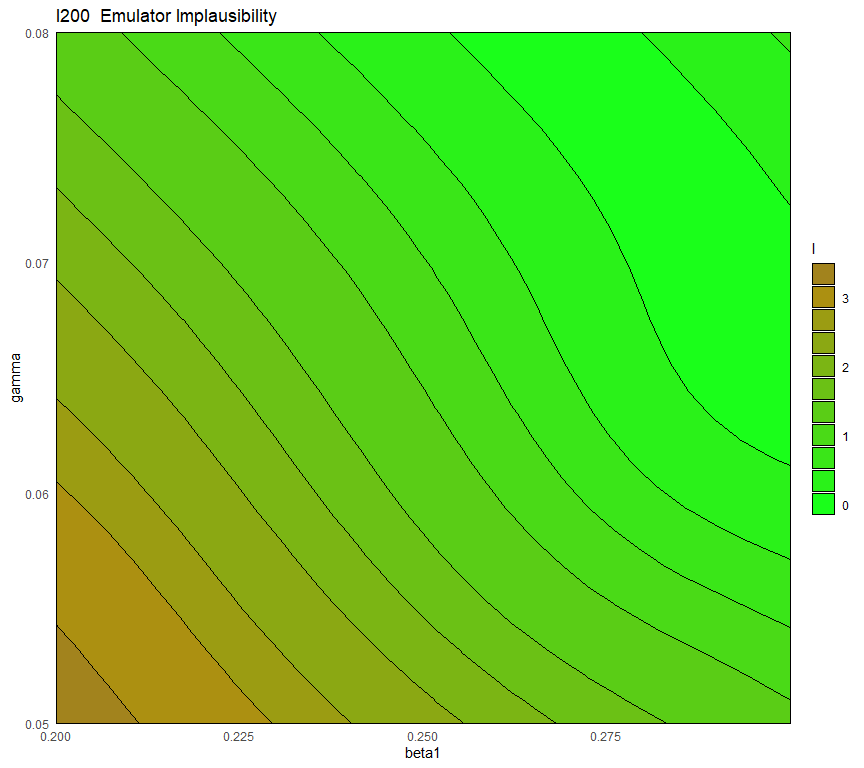
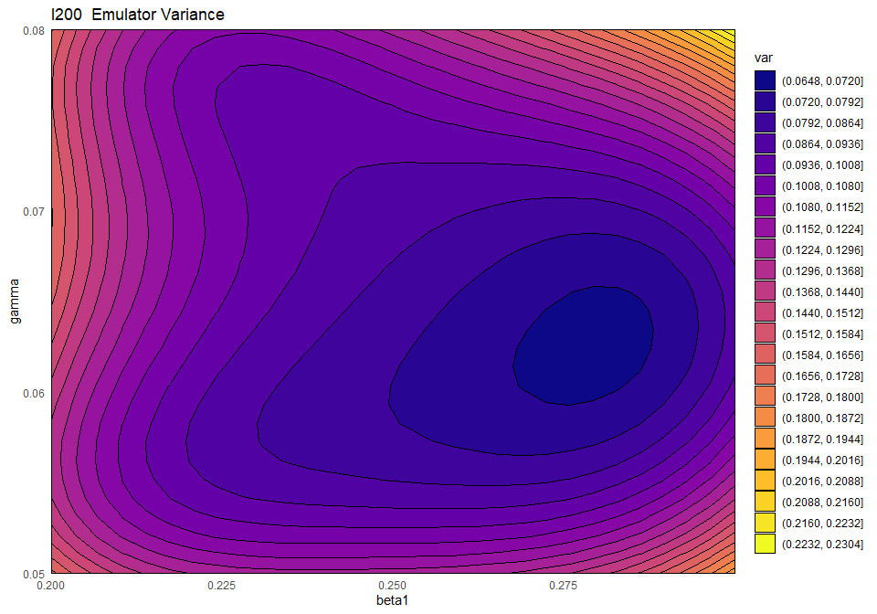
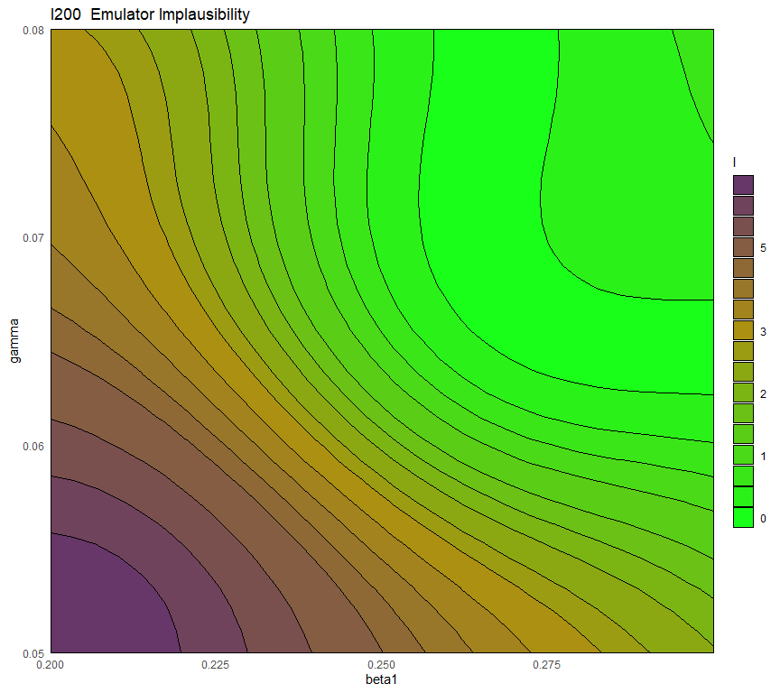

9 Second wave
In this section we move to the second wave of emulation. We will start by defining all the data necessary to train the second wave of emulators. We will then go through the same steps as in the previous section to train the emulators, test them and generate new points. We conclude the section with a short discussion on when and how to customise the value of the correlation lengths.
To perform a second wave of history matching and emulation we follow the same procedure as in the previous sections, with two caveats. We start by forming a dataframe wave1 using parameters sets in new_points, as we did with wave0, i.e. we evaluate the function get_results on new_points and then bind the obtained outputs to new_points. Half of wave1 should be used as the training set for the new emulators, and the other half as the validation set to evaluate the new emulators’ performance. Note that when dealing with computationally expensive models, using the same number of points for the training and validation sets may not feasible. If \(p\) is the number of parameters, a good rule of thumb is to build a training set with at least \(10p\) points, and a validation set with at least \(p\) points.
Now note that parameter sets in new_points tend to lie in a small region inside the original input space, since new_points contains only non-implausible points, according to the first wave emulators. The first caveat is then that it is preferable to train the new emulators only on the non-implausible region found in wave one. To do this we define new ranges for the parameters:
min_val <- list()
max_val <- list()
new_ranges <- list()
for (i in 1:length(ranges)) {
par <- names(ranges)[[i]]
min_val[[par]] <- max(min(new_points[,par])-0.05*diff(range(new_points[,par])),
ranges[[par]][1])
max_val[[par]] <- min(max(new_points[,par])+0.05*diff(range(new_points[,par])),
ranges[[par]][2])
new_ranges[[par]] <- c(min_val[[par]], max_val[[par]])
}The list new_ranges contains lower and upper bounds for each parameter. The upper bound for a given parameter is determined in the following way:
Among all points in
new_points, the maximum value of the parameter is identified.\(5\%\) of the original range of the parameter is added to the maximum value found in the previous point. This step enlarges slightly the new range, to make sure that we are including all non-implausible points.
The minimum between the value found above and the upper bound in the original
rangeslist is selected: this ensure that we do not end up with a new upper bound which is larger than the original one.
A similar calculation was adopted to determine the new lower bounds of parameters.
Since wave two emulators will be trained only on the non-implausible space from wave one, their implausibility cannot be assessed everywhere in the original input space. For this reason, the second caveat is that when generating new parameter sets at the end of wave two, we must consider implausibility across both wave one and wave two emulators, i.e. we need to pass emulators from both waves to the function generate_new_points. To do this we simply make the first argument of generate_new_points equal to the vector c(ems_wave2, ems_wave1), where ems_wave2 are the wave two emulators. Note that generate_new_points picks the ranges of parameters from the first emulator in the list. For this reason, it is important to put the second wave emulators first (in c(ems_wave2, ems_wave1)), which have smaller ranges.
In the task below, you can have a go at wave 2 of the emulation and history matching process yourself.
new_points and new_ranges, train new emulators. Customise them and generate new parameter sets.


As we did for the wave 1 emulators, let us check the values of the adjusted \(R^2\) for the new emulators:
R_squared_new <- list()
for (i in 1:length(ems_wave2)) {
R_squared_new[[i]] <- summary(ems_wave2[[i]]$model)$adj.r.squared
}
names(R_squared_new) <- names(ems_wave2)
unlist(R_squared_new)## I25 I40 I100 I200 I300 I350 R25 R40
## 0.9945087 0.9939567 0.9799046 0.9399469 0.9456154 0.7993445 0.9954155 0.9938812
## R100 R200 R300 R350
## 0.9744998 0.9771114 0.9611846 0.9409741All \(R^2\) values are very high, meaning that the regression term is contributing far more than the residuals. As all of the emulators we have seen so far have had high \(R^2\) values, we have not discussed the customisation of \(\theta\). We now want to briefly comment on what happens when instead the \(R^2\) are lower and the residuals play a more substantial role. In such cases, the extent to which residuals at different parameter sets are correlated is a key ingredient in the training of emulators, since it determines how informative the model outputs at training parameter sets are. For example, if residuals are highly correlated even at parameter sets that are far away from each other, then knowing the model output at a given parameter set gives us information about a wide region around it. This results in rather confident emulators, which cut a lot of space out. If instead residuals are correlated only for parameter sets that are close to each other, then knowing the model output at a given parameter set gives us information about a small region around it. This creates more uncertain emulators, which can rule out a lot of input parameter space. It is then clear that when we don’t have very high \(R^2\) values, we can use \(\theta\) to increase or decrease the amount of space cut out by emulators.
In practice, if you do not pass a value for it, \(\theta\) is chosen very carefully by the HMER package, and most users calibrating deterministic models will not have to vary the value of \(\theta\) for most of their emulators. If, however, you find that the non-implausible space is shrinking very slowly, particularly in later waves (see section 9 for details of how to check this), then the value of \(\theta\) may be too conservative. If this occurs, then you can increase the \(\theta\) of the emulators to increase the rate at which space is reduced. You should only do this if you are confident that your outputs are smooth enough to justify the choice of \(\theta\) however, or you risk the emulators incorrectly excluding space when model fits could be found. We discuss the choice of \(\theta\) further in our workshop on calibrating stochastic models.
To see all this in practice, we train new wave one emulators, assuming a linear regression term by setting quadratic=FALSE:
ems_wave1_linear <- emulator_from_data(training, names(targets),
ranges, quadratic=FALSE,
c_lengths= rep(0.55,length(targets)))
R_squared_linear <- list()
for (i in 1:length(ems_wave1_linear)) {
R_squared_linear[[i]] <- summary(ems_wave1_linear[[i]]$model)$adj.r.squared
}
names(R_squared_linear) <- names(ems_wave1_linear)
unlist(R_squared_linear)## I25 I40 I100 I200 I300 I350 R25 R40
## 0.9697263 0.9491857 0.9007032 0.7157199 0.8191644 0.1823831 0.9827103 0.9809724
## R100 R200 R300 R350
## 0.9310675 0.9645519 0.8112647 0.8390023By forcing the regression hypersurface to be linear, we obtain emulators where the global term is not always sufficient to explain the model output on its own. As a rough guide, \(R^2\) values of below \(0.9\) indicate that the residuals are playing an important role. Let us see what happens if we plot the variance and the implausibility for the linear \(I200\) emulator before and after increasing its \(\theta\) by a factor of \(3\):
emulator_plot(ems_wave1_linear$I200, plot_type = 'var',
params = c('beta1', 'gamma'))
emulator_plot(ems_wave1_linear$I200, plot_type = 'imp', targets = targets,
params = c('beta1', 'gamma'), cb=TRUE)
ems_wave1_linear$I200 <- ems_wave1_linear$I20$set_hyperparams(
list(theta=ems_wave1_linear$I200$corr$hyper_p$theta *3))
emulator_plot(ems_wave1_linear$I200, plot_type = 'var',
params = c('beta1', 'gamma'))
emulator_plot(ems_wave1_linear$I200, plot_type = 'imp', targets = targets,
params = c('beta1', 'gamma'), cb=TRUE)
First of all, the blue-purple area in the variance plot becomes larger after \(\theta\) increased: this shows that a higher \(\theta\) results in the model output at training points influencing a wider region around itself. Second, we see that a higher \(\theta\) causes the implausibility measure to have higher values: as a consequence, more space will be ruled out as implausible.